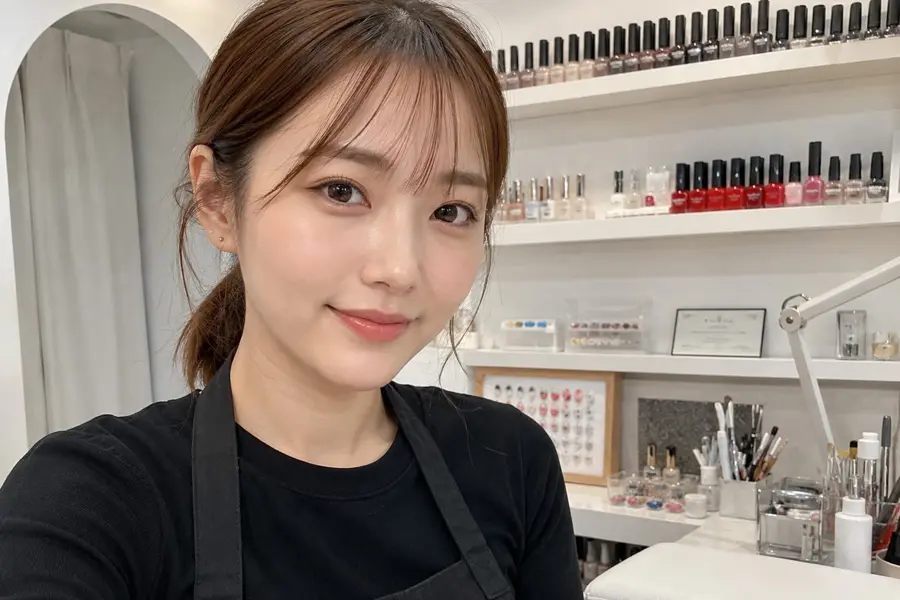
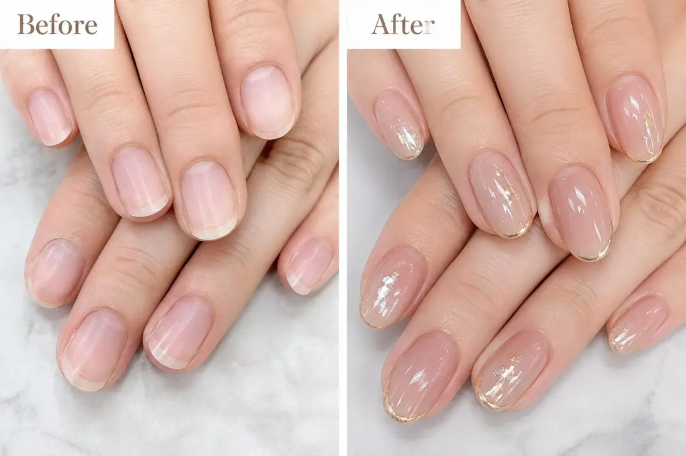
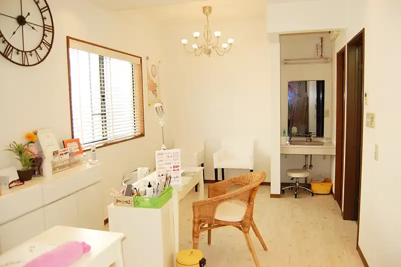
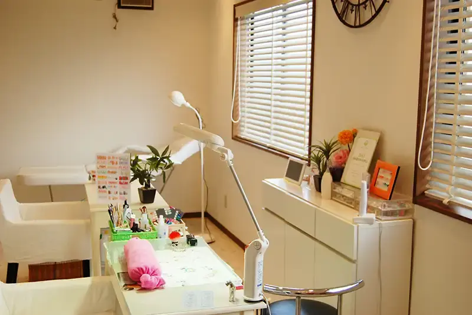
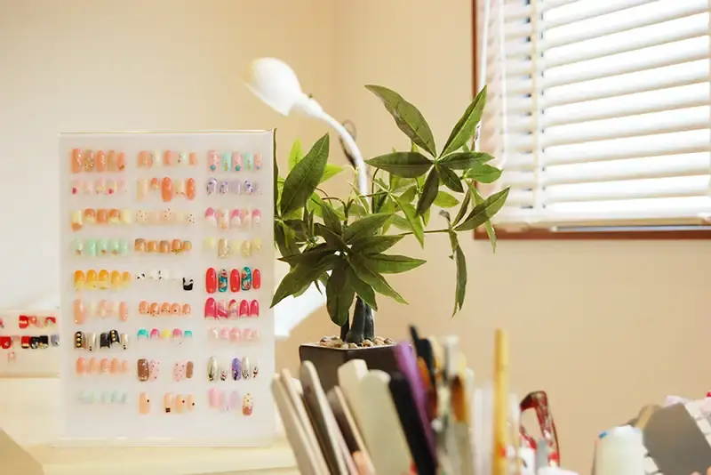

結-YUI-の想い
「早く」「安く」「たくさん」が当たり前になったなかで、私たちはあえて一日にお迎えするお客様の数を絞っています。一本の爪と向き合う時間を削らないこと。それが、結-YUI-がずっと守ってきたことです。
一人にかける時間
完全予約制・1名ずつの個室ブース。次のお客様を気にせず、ゆっくり過ごしていただけます。
無理のないご提案
爪の状態や普段の生活を伺ったうえで、続けやすいデザインとケアをご提案します。
長く続くお付き合い
一度きりではなく、何年も通っていただけるような関係づくりを大切にしています。

店主のご紹介
「結」という名前には、お客様との時間を丁寧に結んでいきたいという思いを込めました。爪だけでなく、その日の気分やお悩みまでじっくり伺うことを大切にしています。
派手すぎず、でも自分に自信が持てるような一本を、一緒に見つけましょう。
- 開業
- 7年目
- 担当してきたお客様
- 800名以上
- のべ施術本数
- 4,200本以上
- ネイリスト歴
- 9年
施術例はInstagramで発信しています：@yui_nail_working
お客様の声

「爪が薄くて自己流のケアに不安があったのですが、無理のない範囲で少しずつ整えてもらえて安心しました。」
「派手すぎないデザインを毎回一緒に考えてもらえるので、仕事の日も気兼ねなくつけていられます。」
89%のお客様が、2回目以降も通い続けています。
よくあるご質問
爪が薄くてもジェルはできますか？
はい。爪の状態に合わせて負担の少ない施術方法をご提案しますので、まずはご相談ください。
予約はどのくらい前に必要ですか？
完全予約制のため、1週間前後のご予約をおすすめしています。当日に空きがある場合もありますので、お気軽にお問い合わせください。
オフ（ジェルの除去）だけでも利用できますか？
できます。他店で施術されたジェルでもお気軽にご相談ください。
アクセス・営業時間
| 場所 | ◯◯駅 徒歩5分（裏通りの隠れ家立地） |
|---|---|
| 営業時間 | 11:00–19:00 |
| 定休日 | 月曜・第3火曜 |
| ご予約 | LINE（メイン）、お電話でも承ります |
| SNS | Instagramで施術例を公開中 |
駅からの道順
- ◯◯駅 南口を出て、大通りを直進（約3分）
- 2つ目の信号を右へ
- コインランドリーの角を左折してすぐ、白いドアの建物の2階です
※詳しい住所は、ご予約確定後にご案内します。


